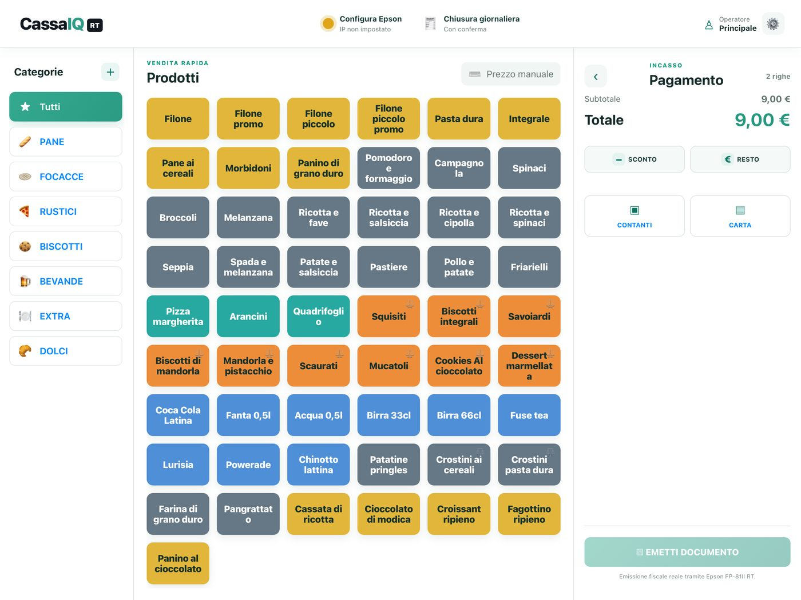
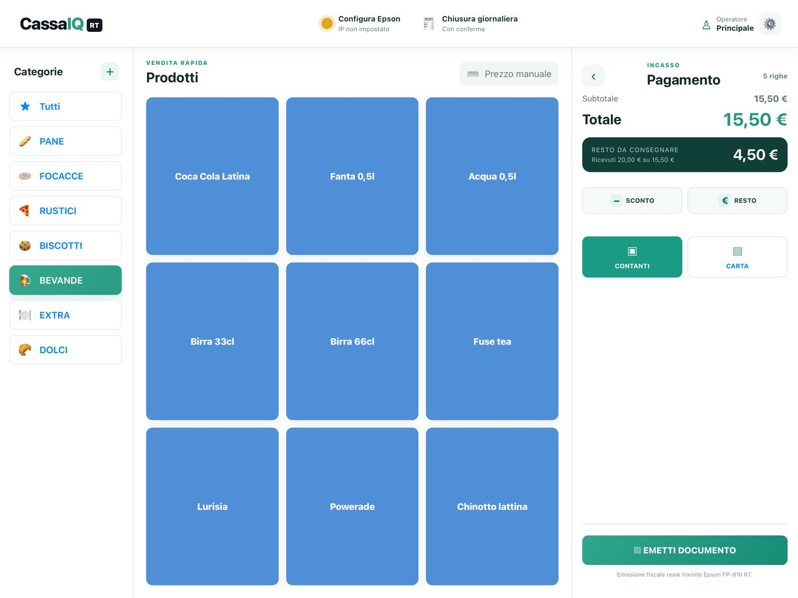
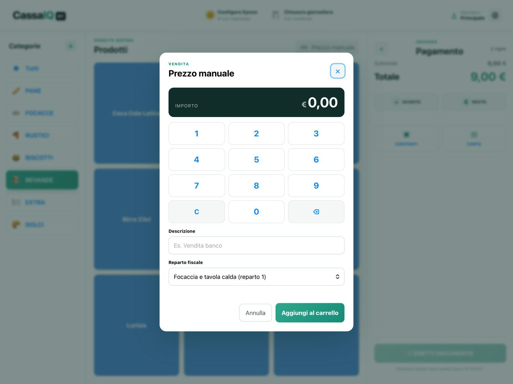

CassaIQ RT trasforma l'iPad in un registratore di cassa da banco per bar, panifici, gastronomie e negozi. Vendita rapida, scontrino fiscale reale e gestione del catalogo, tutto in un'unica schermata.
Disponibile su App Store Richiede un registratore telematico Epson serie FP-81II RT collegato alla rete locale.Tasti prodotto grandi, organizzati per categoria e colore, che si adattano da soli allo schermo. Prezzo manuale e prodotti a peso con tastierino.
Carrello chiaro, sconto, resto, contanti o carta. Ordini in attesa per mettere da parte una vendita e riprenderla dopo.
Documenti commerciali e chiusura giornaliera tramite registratore telematico Epson FP-81II RT sulla rete locale.
Prodotti, categorie e reparti fiscali configurabili, con una libreria di 160 immagini generiche pronte all'uso.
Incassi, scontrini e prodotti più venduti, con filtri per periodo.
Con un account gratuito, catalogo e vendite si sincronizzano tra dispositivi. La cassa funziona anche senza account.
Schermo intero, tocchi rapidi, tutto leggibile a colpo d'occhio. CassaIQ Rt è un'app per iPad progettata per l'uso quotidiano in cassa, non un gestionale da scrivania.
Vendita rapida, calcolo del resto e prezzo manuale, in una sola schermata.

Vendita rapida
Resto da consegnare
Prezzo manualeHai bisogno di aiuto o vuoi segnalare un problema? Siamo a disposizione.